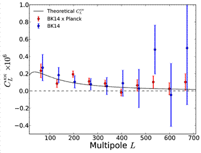
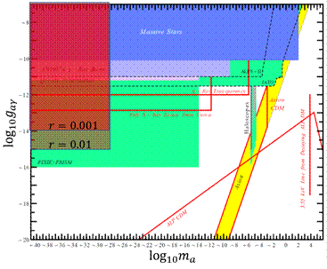
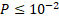
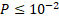

Profile (履歴) / Research (研究) / Schedule
Table of
Contents
About My Research
My
research has been motivated by fundamental questions in cosmology such as
physics in the early universe, and origins of the dark matter and cosmic
acceleration. My ultimate goal is to understand and
explain all of the observational facts in the Universe by a consistent
phenomenological model motivated by fundamental laws of physics. To deepen our
understanding of the Universe, a strong interaction between theory and
observation is required. My interests revolve around the area of intersection
between theoretical and observational studies. My specific interests include
cosmology using the cosmic microwave background (CMB), large-scale structure
(LSS), reionization, and gravitational-wave (GW) direct detection.
From Observation to Theory: Extracting Implications for Cosmology and
High-Energy Physics
Gravitational
lensing of CMB --- The path of CMB photons is deflected by gravitational
potential of LSS with typically a few arc-minute deflection. This leads to a
distortion in pattern of CMB anisotropies. Among various cosmological
observations, a measurement of CMB weak lensing is a direct clean probe of
intervening gravitational potentials along the line of sight. The CMB lensing
has been detected recently, and this new signal will soon be one of the most
powerful probes of fundamental issues in cosmology and physics. I
analyzed the CMB data taken from the BICEP2/Keck Array (BK) Collaboration and
showed detection of the gravitational lensing at  statistical significance (BICEP2 / Keck Array Collaborations 2016). Combining the B-mode power spectrum measurement, the data
starts to constrain other possible source of B modes such as cosmic strings,
primordial magnetic fields, and gravity beyond general relativity. Namikawa et al (2019) measures the cross-spectrum between the cosmic shear
and CMB lensing obtained from Subaru-HSC and POLARBEAR, respectively. Although
the detection significance is still low, this is the first detection of the
cross-spectrum using polarization data alone. Since the polarization-only
measurement will be the best way to measure CMB lensing, the demonstration by
this work is an important step for future lensing measurements.


Figure 1: Left: Measurement of lensing
power spectrum from large-scale B-modes (BICEP2/Keck Array Collaborations
2016).
Right: The first measurement of cross-spectrum between CMB-polarization lensing
and cosmic shear (Namikawa et al 2019).
Axion-like particles --- String theory generally
predicts production of axionlike particles which couple with the
electro-magnetic fields. Such interaction could lead to anisotropies of the CMB
polarization angle rotation. The anisotropic rotation could be also generated
by the primordial magnetism and in the Standard Model extension framework.
Measurement of the polarization rotation anisotropies will open new window into
the early Universe. To test the parity-violating mechanism
via the polarization rotation anisotropies, we need to accurately reconstruct
the power spectrum of the polarization rotation angle. Namikawa (2017a) shows
feasibility of reconstructing polarization-rotation power spectrum from the
power of the quadratic estimator of CMB anisotropies, and find that (1) a
secondary contraction of the trispectrum which has been ignored in the previous
works increases the total signal-to-noise, (2) a bias from the lensing-induced
trispectrum is significant compared to the statistical errors in, e.g.,
LiteBIRD and CMBS4-like experiments, (3) the use of a realization-dependent
estimator decreases the statistical errors by 10%-20%, depending on
experimental specifications, and (4) other higher-order contributions are
negligible at least for near future experiments. I analyzed the BK data and
significantly improved constraints on the anisotropies of the polarization
rotation (BICEP2 / Keck Array Collaborations 2017).

Figure 2: Excluded parameter region of
axion-like particles from the latest CMB data (Namikawa et al. 2020, red),
overlying a figure of Ringwald (2014)
Reionization --- The reionization is an inhomogeneous process
but its knowledge is very limited. CMB photons are scattered by the electrons
produced by the reionization, and the statistics of the CMB anisotropies are
altered. Namikawa 2017b provides
improved constraints on the inhomogeneties of the
reionization by measuring the trispectrum of the Planck temperature
fluctuations. The constraint presented by this work implies that the B modes
from the patchy reionization is at most several percent of the lensing B modes
in power. Thus, the patchy reionization contamination is not significant if we
want to detect the primordial gravitational waves with  which is the goal of the ongoing and near term
CMB experiments.
which is the goal of the ongoing and near term
CMB experiments.
Cosmic Strings --- Topological defects such as cosmic strings could be
produced by the spontaneous symmetry breaking at the early universe.
Constraints on cosmic strings give an informative picture of the early universe
and have implications for particle physics. While cosmic strings have been
constrained by many observations, Namikawa et al. (2012) proposes a
new way to constrain cosmic strings using weak lensing measurements.
Observables in weak lensing measurements (cosmic shear, deflection angle) are
in general decomposed into two components by the parity symmetry (called E/B
modes, or gradient/curl modes). The curl mode is not generated by the scalar
perturbation at linear theory but could be produced by, e.g., the cosmic
string. We first formulate the fullsky curl-mode
estimator in the same way as in the gradient mode as a quadratic in CMB
anisotropies. Then we discuss prospect of constraining cosmic strings. Namikawa et al. (2013b) constrains
for the first time the tension  and reconnection probability P of the cosmic string
using curl modes from 1) the Planck 2013 data release and 2) the ACT 2008
season data. At , our constraint becomes
tighter than that from the Planck temperature power spectrum.
and reconnection probability P of the cosmic string
using curl modes from 1) the Planck 2013 data release and 2) the ACT 2008
season data. At , our constraint becomes
tighter than that from the Planck temperature power spectrum.
Developing Analysis Method and Improving Theoretical Prediction
CMB
lensing reconstruction --- The lensing-mass map reconstructed from CMB observation is a
powerful probe in cosmology. However, not only ``precision'' but also
``accuracy'' should be seriously taken into account
for ongoing and near future lensing measurements. Namikawa et al. (2013a) proposes new
methods for the lensing reconstruction from CMB temperature fluctuations which
are less sensitive than standard estimators to several potential experimental
systematics. These estimators are more reliable than standard estimators when
applied to realistic CMB observations. The estimator for the mean-field bias is
useful for a cross-check on standard results. Namikawa & Takahashi (2014) generalized
the estimators to the case with polarization data.
Delensing --- Inflationary scenario
predicts the presence of the GWs originated from quantum fluctuations.
Detection of the primordial GWs is known as a smoking gun of inflation.
Measurements of the rotational pattern in the CMB polarization (B-mode) on
angular scales larger than a few dozen arc-minutes
have been considered as the best avenue to probe the primordial GWs. However,
on large angular scales the GW B modes are expected to be dominated over 1)
Galactic foreground, and 2) Gravitational lensing. These contaminants are
needed to be removed in the future CMB analysis. I have studied to realize the
removal of lensing (delensing). For example, LiteBIRD plans to observe the B
mode in nearly fullsky, and delensing requires a fullsky lensing observation. To make a precise lensing
template, the experiment should have high-angular resolution to resolve
small-scale fluctuations perturbed by lensing, i.e., LiteBIRD should be a very
large satellite. However, such large satellite is too expensive to realize, and
a more economical way is needed to measure both the large-scale B-modes and
lensing map. Namikawa
& Nagata (2014) discuss possibility of constructing the lensing
template from a patchwork of polarization maps obtained from ground-based
experiments and find that the lensing template can be reconstructed in an
unbiased manner. The lensing B modes are known to be a non-Gaussian
field. If the delensed B modes also deviate from a
Gaussian field, the statistical significance of detecting the GW B modes is
degraded compared to the case if the delensed B mode
is a Gaussian field. Namikawa
& Nagata (2015) showed that the delensed B
mode is still nearly a Gaussian field for Simons Array like experiment. On the
other hand, the delensed B-modes obtained from
higher-sensitivity experiments have still non-Gaussian behavior. Since the
studies of delensing have assumed a Gaussian field of lensing potential and/or
mass tracers, Namikawa & Takahashi (2018) found that
the impact of the nonlinear evolution of LSS on delensing is not significant.
Namikawa (2017b) presents a new way of delensing B modes of the CMB
using a lensing potential reconstructed from the same realization of the CMB
polarization (CMB internal delensing). The B-mode delensing is required to improve
sensitivity to primary B modes generated by, e.g., the inflationary
gravitational waves, axionlike particles, modified gravity, primordial magnetic
fields, and topological defects such as cosmic strings. However, the CMB
internal delensing suffers from substantial biases due to correlations between
observed CMB maps to be delensed and that used for
reconstructing a lensing potential. We construct a realization-dependent (RD)
estimator for correcting these biases by deriving a general optimal estimator
for higher-order correlations. The RD estimator is less sensitive to simulation
uncertainties. Compared to the previous methods, we find that the RD estimator
corrects the biases without substantial degradation of the delensing efficiency.
Nonlinear matter/lensing
bispectrum
--- The nonlinear growth of the LSS produces bispectrum and higher-order
correlations of the lensing potential. Extracting this signal provides
additional information on dark energy, dark matter and
massive neutrinos. Namikawa et al. (2019) tests the
fitting formula of the matter bispectrum by measuring the matter/lensing bispectra from the ray-tracing simulation. We found that
the accuracy of the fitting formula depends on scale and configurations. For
example, the fitting formula does not accurately predict the squeezed
bispectrum from the simulation.
From Theory to Observation: Proposal of New Cosmological Probes
Synergy between CMB experiments
and galaxy surveys --- The power spectra of the CMB and galaxy lensing are useful to
constrain cosmology. Namikawa et al. (2010) shows a
forecast study for the joint lensing analysis between Subaru Hyper Sprime-Cam (HSC) and ACTPol. We
then point out that the constraint on massive neutrinos suffers from the
degeneracy between the matter energy density and sum of neutrino masses.
Namikawa et al. (2011) presents forecast studies for constraining the
primordial non-Gaussianity from photometric surveys through a modification of
the galaxy clustering amplitudes. I particularly focused on the magnification
effect in estimating the non-Gaussian parameter, . I found that the
magnification effect in the galaxy clustering could mimic the modification by
the primordial non-Gaussianity, and could cause a significant systematic bias
in estimating  , especially for deep
imaging surveys such as Subaru HSC and Large Synoptic Survey Telescope (LSST).
However, if weak lensing measurements are further combined, the bias could be
reduced well within the 1
, especially for deep
imaging surveys such as Subaru HSC and Large Synoptic Survey Telescope (LSST).
However, if weak lensing measurements are further combined, the bias could be
reduced well within the 1 statistical error.
statistical error.
Nonlinear growth of LSS in
CMB lensing
--- The nonlinear growth of the LSS produces bispectrum and higher-order
correlations of the lensing potential. Extracting this
signals provides additional information on dark energy, dark matter and
massive neutrinos. Also, the impact of the nonlinear growth should be taken into account in the analysis of CMB lensing
measurements. Namikawa (2016) shows that
bispectrum of the CMB lensing potential is detectable from ongoing and near
term CMB experiments. Namikawa et al. (2018) discusses
constraints on gravity theories via the CMB lensing bi-spectrum.
Gravitational lensing by GWs --- The primordial GWs lead
to the gravitational lensing effect on CMB / galaxies and produce a rotational
pattern in the deflection vector / galaxy shear (curl mode). The curl mode
therefore can be a probe of the primordial GWs. Namikawa et al. (2015) showed that,
using the optimal (maximum likelihood) method, the GW-induced lensing is detectable
in CMB experiments with noise levels necessary to confirm the consistency
relation of the primordial GWs. Further, we point out that the curl mode is
useful to constrain GWs generated after the recombination epoch. Namikawa et al. (2019) constrains the stochastic GW background at Mpc scales using the CMB temperature, B-mode
and lensing curl mode data. This constraint is the most stringent to date at Mpc scale.
Cosmology with GW source
clustering
--- Compact
binary stars at cosmological distances are promising sources for GWs, and these
are thought to be powerful cosmological probes, referred to as the GW standard
sirens. Since the redshift identification for each GW source at high redshift
is challenging, Namikawa et al. (2016a) presented a
new method for GW standard sirens without redshift measurements. The
first detection of the GW event from the black-hole (BH) binary indicates a
higher merger rate, and enlarges future prospects for
GW cosmology using BH binaries. Namikawa et al. (2016c) shows that,
even with the second-generation GW detector network, we can test whether BH
binaries are a good tracer of the dark matter inhomogeneities. This test is
important not only to understand the properties of their host galaxy, but also
to show the possibility of applying GW sources to cosmology in the future.
Publications
Link
First/Corresponding Author
[1]. T. Namikawa, Y. Guan, O.
Darwish, B. D. Sherwin, et al,, ``The Atacama Cosmology Telescope:
Constraints on Cosmic Birefringence", arXiv:2001.10465, Phys.
Rev. D 101 (2020) 083527
[2].
T.
Namikawa, Y. Chinone, H. Miyatake, M. Oguri, R. Takahashi,
A. Kusaka, N. Katayama et al., ``Evidence for the
Cross-correlation between Cosmic Microwave Background Polarization Lensing from
POLARBEAR and Cosmic Shear from Subaru Hyper Suprime-Cam", arXiv:1904.02116, Astrophys. J. 882 (2019) 12
[3].
T. Namikawa, S. Saga, D. Yamauchi, A. Taruya,
``CMB Constraints on Stochastic Gravitational-Wave Background at Mpc scales", arXiv:1904.02115, Phys.
Rev. D (Rapid Communications) 100 (2019) 021303
[4]. T. Namikawa, B. Bose, F. Bouchet, A. Taruya, R. Takahashi,
``CMB lensing bi-spectrum: assessing analytical predictions against full-sky
lensing simulations", arXiv:1812.10635, Phys.
Rev. D 99 (2019) 063511
[5].
T. Namikawa, R. Takahashi, ``Impact of nonlinear growth of the
large-scale structure on CMB B-mode delensing", arXiv:1810.03346, Phys.
Rev. D 99 (2019) 023530
[6].
T. Namikawa, F. Bouchet, A. Taruya, ``The CMB lensing bi-spectrum as a probe
of modified gravity theories", arXiv:1805.10567, Phys.
Rev. D 98 (2018) 043530
[7].
T. Namikawa, ``Constraints on Patchy Reionization from Planck
CMB Temperature Trispectrum", arXiv:1711.00058, Phys.
Rev. D 97 (2018) 063505
[8].
BICEP2 / Keck Array Collaborations / T. Namikawa as corresponding
author, ``BICEP2
/ Keck Array IX: New Bounds on Anisotropies of CMB Polarization Rotation and
Implications for Axionlike Particles and Primordial Magnetic Fields", arXiv:1705.02523, Phys.
Rev. D 96 (2017) 102003
[9].
T. Namikawa, ``CMB internal delensing with general optimal
estimator for higher-order correlations", arXiv:1703.00169, Phys.
Rev. D 95 (2017) 103514
[10].
T. Namikawa, ``Testing parity-violating physics from cosmic
rotation power reconstruction", arXiv:1612.07855, Phys.
Rev. D 95 (2017) 043523
[11].
BICEP2 / Keck Array Collaborations / T. Namikawa as corresponding
author, ``BICEP2
/ Keck Array VIII: Measurement of Gravitational Lensing from Large-Scale B-mode
Polarization", arXiv:1606.01968, Astrophys. J. 833 (2016) 228
[12].
T. Namikawa, ``CMB Lensing Bispectrum from Nonlinear
Growth of the Large Scale Structure", arXiv:1604.08578, Phys.
Rev. D (Rapid Communications) 93 (2016) 121301
[13].
T. Namikawa, A. Nishizawa, A. Taruya, ``Detecting
Black-Hole Binary Clustering via the Second-Generation Gravitational-Wave
Detectors", arXiv:1603.08072, Phys.
Rev. D 94 (2016) 024013
[14].
T. Namikawa, D. Yamauchi, B. Sherwin, R. Nagata, ``Delensing
Cosmic Microwave Background B-modes with the Square Kilometre
Array Radio Continuum Survey", arXiv:1511.04653, Phys.
Rev. D 93 (2016) 043527,
[15].
T. Namikawa, A. Nishizawa, A. Taruya, ``Anisotropies
of gravitational-wave standard sirens as a new cosmological probe without
redshift information", arXiv:1511.04638, Phys.
Rev. Lett. 116 (2016) 121302
[16].
T. Namikawa, R. Nagata, ``Non-Gaussian Structure of B-mode
Polarization after Delensing", arXiv:1506.09209, J. Cosmol.
Astropart. Phys. 10 (2015) 004
[17].
T. Namikawa, D. Yamauchi, A. Taruya, ``Future
detectability of gravitational-wave induced lensing from high-sensitivity CMB
experiments", arXiv:1411.7427, Phys.
Rev. D 91 (2015) 043531
[18].
T. Namikawa, R. Nagata, ``Lensing reconstruction from a
patchwork of polarization maps", arXiv:1405.6568, J. Cosmol.
Astropart. Phys. 09 (2014) 009
[19].
T. Namikawa, ``Cosmology from weak lensing of CMB", arXiv:1403.3569, Prog. Theor. Exp. Phys. 06B108 (2014)
[20].
T. Namikawa, R. Takahashi, ``Bias-Hardened CMB Lensing with
Polarization", arXiv:1310.2372, Mon. Not. R. Astron.
Soc. 438 (2014) 1507-1517
[21].
T. Namikawa, D. Yamauchi, A. Taruya, ``Constraining
cosmic string parameters from curl mode of CMB lensing", arXiv:1308.6068, Phys. Rev. D 88 (2013)
083525
[22].
T. Namikawa, D. Hanson, R. Takahashi, ``Bias-Hardened CMB
Lensing", arXiv:1209.0091, Mon. Not. R. Astron.
Soc. 431 (2013) 609-620
[23]. T. Namikawa, D. Yamauchi, A. Taruya, ``Full-sky lensing reconstruction of
gradient and curl modes from CMB maps", arXiv:1110.1718, J. Cosmol.
Astropart. Phys. 01 (2012) 007
[24].
T. Namikawa, T. Okamura, A. Taruya, ``Magnification
effect on the detection of primordial non-Gaussianity from photometric surveys", arXiv:1103.1118, Phys. Rev. D 83 (2011)
123514
[25].
T. Namikawa, S. Saito, A. Taruya, ``Probing
dark energy and neutrino mass from upcoming lensing experiments of CMB and
galaxies", arXiv:1009.3204, J. Cosmol.
Astropart. Phys. 12 (2010) 027
Japanese Publications
[1]. 並河 俊弥「宇宙マイクロ波背景輻射の弱い重力レンズを用いた宇宙論：現状と将来の展望」
天文月報, vol.106, p788-795
Other Research Materials
Code
·
Python modules for analyzing a map to compute non-Gaussian
statistics
LINK
·
Fortran library for reconstructing lensing potential, cosmic
birefringence, and patchy reionization from CMB
LINK
Note
·
Analytic formulae for Minkowski
Functional of Lensed CMB map [PDF]
·
CMBの重力レンズ効果まとめ [PDF]
·
宇宙論における統計 [PDF]
Talks / Posters
Conference
·
"Gravitational lensing analysis from high precision B-modes", Texas'19, Portsmouth, UK, Dec. 2019,
·
"Measuring lensing and cosmic birefringence with high
precision B-modes", KICC 10th Anniversary
Symposium, Cambridge, UK, Sep. 2019, Poster
·
"Gravitational lensing analysis from high-precision B-mode
data",
Non-Gaussian Universe, Cambridge, UK, Sep. 2019
·
"Gravitational lensing analysis from Subaru HSC and POLARBEAR", Cosmo19, Aachen, Germany, Sep. 2019
·
"Gravitational lensing and anisotropic birefringence from
BICEP/Keck Array and AliCPT", Cosmology and AliCPT,
Shanghai, Sep. 2018
·
"Removal of lensing contributions in CMB polarization for
ongoing and future experiments", Gravity
and Cosmology 2018, YITP, Kyoto U, Feb. 2018
·
"BICEP2/Keck Array Results IX", 2nd B-mode from space, UC Berkeley, Dec. 2017
·
"Lensing reconstruction and delensing with BICEP2/Keck Array", CMB lensing workshop, Stanford, Sep. 2017
·
"Lensing B-mode at low ell", B-mode from space, IPMU, Dec. 2015
·
Recent progress in CMB lensing and delensing", Cosmology with redshift-space galaxy clustering,
YITP, Kyoto U, Feb. 2014
·
"Measuring lensing effect on temperature and polarizations", The CMB and theories of the primordial universe,
YITP, Kyoto U, Aug. 2013
·
"Lensing reconstruction from CMB polarization map with
bias-hardened approach", Int. Conf.
on CMB, OIST, Jun. 2013, Poster
·
"Recent progress and future prospects of CMB lensing", 3rd Int. Workshop on Dark Matter, Dark Energy and
Matter-antimatter Asymmetry, NCTS & LeCosPA, Dec.
2012,
·
"An Improved Method for CMB Lensing Reconstruction and Its
Cosmological Applications", RESCEU
symposium: JGRG 22, U Tokyo, Nov. 2012
·
"Lensing reconstruction from current CMB data and
constraining non-scalar metric perturbations with lensing curl", KEK-CPWS-AIU2012, KEK, Nov. 2012
·
"Lensing Reconstruction from Cosmic Microwave Background", RESCEU Summer School, Fukushima, Jul. 2012
·
"Probing dark energy and neutrino mass from upcoming lensing
experiments of CMB and galaxies", DENET/IAP
Conference, IAP, Oct. 2011
·
"An algorithm for reconstructing gradient- and curl-type
deflection angle from CMB maps", Berkeley
CMB Lensing Workshop, UC Berkeley, Apr. 2011
·
"Impact of magnification effect on the detection of
primordial non-Gaussianity from imaging survey of galaxies", DENET 2011 Subaru HSC Workshop, ASIAA, Mar. 2011
·
"Magnification effect on galaxy-CMB lensing cross-correlation", Horiba International Conference: COSMO/CosPA 2010, U Tokyo, Sep. 2010